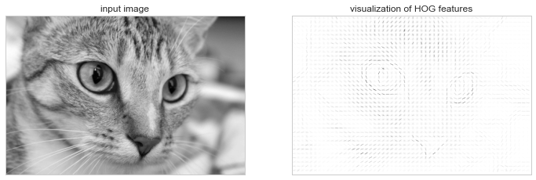
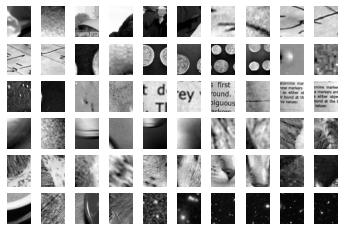
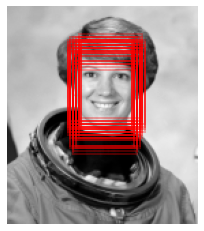

%matplotlib inline
import matplotlib.pyplot as plt
plt.style.use('seaborn-whitegrid')
import numpy as np응용 분야: 얼굴 감지 파이프라인
이 책의 이 부분에서는 머신러닝(Machine Learning)의 여러 핵심 개념과 알고리즘을 살펴보았습니다. 그러나 이러한 개념을 실제 응용 프로그램으로 옮기는 것은 어려울 수 있습니다. 실제 데이터 세트는 시끄럽고 이질적입니다. 누락된 기능이 있을 수 있으며, 데이터는 깔끔한 [n_samples, n_features] 행렬에 매핑하기 어려운 형식일 수 있습니다. 여기에 설명된 방법을 적용하기 전에 먼저 데이터에서 이러한 기능을 추출해야 합니다. 모든 영역에 적용되는 이를 수행하는 방법에 대한 공식은 없으므로 데이터 과학(Data Science)자로서 여기에서 자신의 직관과 전문 지식을 발휘해야 합니다.
머신러닝(Machine Learning)의 흥미롭고 강력한 적용 중 하나는 이미지에 대한 것입니다. 우리는 분류에 픽셀 수준 기능이 사용되는 몇 가지 예를 이미 보았습니다. 다시 말하지만, 실제 데이터는 그다지 균일하지 않으며 단순한 픽셀은 적합하지 않습니다. 이로 인해 이미지 데이터의 특징 추출 방법에 대한 대규모 문헌이 탄생했습니다(Feature Engineering 참조).
이번 장에서는 특징 추출 기술 중 하나인 HOG(지향성 그래디언트 히스토그램)를 살펴보겠습니다. 이는 이미지 픽셀을 조명과 같은 교란 요인에 관계없이 광범위하게 유익한 이미지 특징에 민감한 벡터 표현으로 변환합니다. 우리는 이러한 기능을 사용하여 책의 이 부분 전체에서 살펴본 머신러닝(Machine Learning) 알고리즘과 개념을 사용하여 간단한 얼굴 감지 파이프라인을 개발할 것입니다.
표준 가져오기부터 시작합니다.
HOG 기능
HOG는 이미지 내에서 보행자를 식별하는 맥락에서 개발된 간단한 특징 추출 절차입니다. 여기에는 다음 단계가 포함됩니다.
- 선택적으로 이미지를 사전 정규화합니다. 이는 조명 변화에 대한 의존성을 방지하는 기능을 제공합니다.
- 수평 및 수직 밝기 변화에 민감한 두 개의 필터로 이미지를 컨볼루션합니다. 이는 가장자리, 윤곽 및 텍스처 정보를 캡처합니다.
- 이미지를 미리 결정된 크기의 셀로 세분화하고 각 셀 내의 그라데이션 방향에 대한 히스토그램을 계산합니다.
- 이웃 셀의 블록과 비교하여 각 셀의 히스토그램을 정규화합니다. 이는 이미지 전반에 걸친 조명 효과를 더욱 억제합니다.
- 각 셀의 정보로부터 1차원 특징 벡터를 구성합니다.
빠른 HOG 추출기는 Scikit-Image 프로젝트에 내장되어 있으며 비교적 빠르게 시험해 볼 수 있으며 각 셀 내의 방향성 그라데이션을 시각화할 수 있습니다(다음 그림 참조).
from skimage import data, color, feature
import skimage.data
image = color.rgb2gray(data.chelsea())
hog_vec, hog_vis = feature.hog(image, visualize=True)
fig, ax = plt.subplots(1, 2, figsize=(12, 6),
subplot_kw=dict(xticks=[], yticks=[]))
ax[0].imshow(image, cmap='gray')
ax[0].set_title('input image')
ax[1].imshow(hog_vis)
ax[1].set_title('visualization of HOG features');
HOG의 작동: 간단한 얼굴 감지기
이러한 HOG 기능을 사용하면 Scikit-Learn 추정기를 사용하여 간단한 얼굴 감지 알고리즘을 구축할 수 있습니다. 여기서는 선형 지원 벡터 머신을 사용합니다(이에 대해 복습이 필요한 경우 심층: 지원 벡터 머신을 다시 참조하세요). 단계는 다음과 같습니다:
- “긍정적인” 훈련 샘플을 구성하기 위해 얼굴의 이미지 썸네일 세트를 얻습니다.
- “부정적” 훈련 샘플을 구성하기 위해 얼굴이 아닌 이미지 썸네일 세트를 얻습니다.
- 이러한 훈련 샘플에서 HOG 기능을 추출합니다.
- 이 샘플에 대해 선형 SVM 분류기를 훈련시킵니다.
- “알 수 없는” 이미지의 경우 모델을 사용하여 이미지에 슬라이딩 창을 전달하여 해당 창에 얼굴이 포함되어 있는지 여부를 평가합니다.
- 탐지가 겹치는 경우 단일 창으로 결합합니다.
다음 단계를 거쳐 시험해 보겠습니다.
1. 긍정적인 훈련 샘플 세트 확보
다양한 얼굴을 보여주는 몇 가지 긍정적인 훈련 샘플을 찾는 것부터 시작해 보겠습니다. Scikit-Learn에서 다운로드할 수 있는 Labeled Faces in the Wild 데이터세트라는 작업하기 쉬운 데이터 세트가 하나 있습니다.
from sklearn.datasets import fetch_lfw_people
faces = fetch_lfw_people()
positive_patches = faces.images
positive_patches.shape(13233, 62, 47)이를 통해 훈련에 사용할 13,000개의 얼굴 이미지 샘플이 제공됩니다.
2. 부정적인 훈련 샘플 세트 얻기
다음으로 얼굴이 포함되지 않은 비슷한 크기의 썸네일 세트가 필요합니다. 이를 얻는 한 가지 방법은 입력 이미지의 모음을 가져와서 다양한 크기로 축소판을 추출하는 것입니다. 여기서는 Scikit-Learn의 PatchExtractor와 함께 Scikit-Image와 함께 제공되는 일부 이미지를 사용합니다.
data.camera().shape(512, 512)from skimage import data, transform
imgs_to_use = ['camera', 'text', 'coins', 'moon',
'page', 'clock', 'immunohistochemistry',
'chelsea', 'coffee', 'hubble_deep_field']
raw_images = (getattr(data, name)() for name in imgs_to_use)
images = [color.rgb2gray(image) if image.ndim == 3 else image
for image in raw_images]from sklearn.feature_extraction.image import PatchExtractor
def extract_patches(img, N, scale=1.0, patch_size=positive_patches[0].shape):
extracted_patch_size = tuple((scale * np.array(patch_size)).astype(int))
extractor = PatchExtractor(patch_size=extracted_patch_size,
max_patches=N, random_state=0)
patches = extractor.transform(img[np.newaxis])
if scale != 1:
patches = np.array([transform.resize(patch, patch_size)
for patch in patches])
return patches
negative_patches = np.vstack([extract_patches(im, 1000, scale)
for im in images for scale in [0.5, 1.0, 2.0]])
negative_patches.shape(30000, 62, 47)이제 얼굴이 포함되지 않은 적합한 이미지 패치가 30,000개 있습니다. 그 중 몇 가지를 시각화하여 어떻게 보이는지 알아보겠습니다(다음 그림 참조).
fig, ax = plt.subplots(6, 10)
for i, axi in enumerate(ax.flat):
axi.imshow(negative_patches[500 * i], cmap='gray')
axi.axis('off')
우리의 희망은 이것이 우리 알고리즘이 볼 수 있는 “비얼굴”의 공간을 충분히 포괄하는 것입니다.
3. 세트 결합 및 HOG 특징 추출
이제 이러한 양성 샘플과 음성 샘플이 있으므로 이를 결합하여 HOG 기능을 계산할 수 있습니다. 이 단계는 각 이미지에 대한 중요한 계산을 포함하기 때문에 약간의 시간이 걸립니다.
from itertools import chain
X_train = np.array([feature.hog(im)
for im in chain(positive_patches,
negative_patches)])
y_train = np.zeros(X_train.shape[0])
y_train[:positive_patches.shape[0]] = 1X_train.shape(43233, 1215)1,215개 차원의 43,000개 훈련 샘플이 남았으며 이제 Scikit-Learn에 공급할 수 있는 형식의 데이터가 있습니다!
4. 서포트 벡터 머신 훈련
다음으로 여기에서 탐색한 도구를 사용하여 썸네일 패치의 분류자를 만듭니다. 이러한 고차원 이진 분류 작업의 경우 선형 서포트 벡터 머신이 좋은 선택입니다. 우리는 Scikit-Learn의 LinearSVC를 사용할 것입니다. SVC에 비해 많은 수의 샘플에 대해 더 나은 스케일링을 제공하는 경우가 많기 때문입니다.
먼저 간단한 Gaussian Naive Bayes 추정기를 사용하여 빠른 기준선을 얻습니다.
from sklearn.naive_bayes import GaussianNB
from sklearn.model_selection import cross_val_score
cross_val_score(GaussianNB(), X_train, y_train)array([0.94795883, 0.97143518, 0.97224471, 0.97501735, 0.97374508])훈련 데이터에서 단순한 순진한 베이즈 알고리즘이라도 95% 이상의 정확도를 얻을 수 있음을 확인할 수 있습니다. C 매개변수의 몇 가지 선택 항목에 대한 그리드 검색을 통해 지원 벡터 머신을 사용해 보겠습니다.
from sklearn.svm import LinearSVC
from sklearn.model_selection import GridSearchCV
grid = GridSearchCV(LinearSVC(), {'C': [1.0, 2.0, 4.0, 8.0]})
grid.fit(X_train, y_train)
grid.best_score_0.9885272620319941grid.best_params_{'C': 1.0}이는 우리를 거의 99%의 정확도까지 끌어올립니다. 최고의 추정기를 가져와서 전체 데이터세트에서 다시 학습시켜 보겠습니다.
model = grid.best_estimator_
model.fit(X_train, y_train)LinearSVC()5. 새 이미지에서 얼굴 찾기
이제 이 모델이 준비되었으므로 새 이미지를 가져와 모델이 어떻게 작동하는지 살펴보겠습니다. 단순화를 위해 다음 그림에 표시된 우주 비행사 이미지의 한 부분을 사용합니다(다음 섹션의 이에 대한 설명을 참조하고 그 위에 슬라이딩 창을 실행하고 각 패치를 평가합니다.
test_image = skimage.data.astronaut()
test_image = skimage.color.rgb2gray(test_image)
test_image = skimage.transform.rescale(test_image, 0.5)
test_image = test_image[:160, 40:180]
plt.imshow(test_image, cmap='gray')
plt.axis('off');다음으로, 이 이미지의 패치를 반복하는 창을 만들고 각 패치에 대한 HOG 기능을 계산해 보겠습니다.
def sliding_window(img, patch_size=positive_patches[0].shape,
istep=2, jstep=2, scale=1.0):
Ni, Nj = (int(scale * s) for s in patch_size)
for i in range(0, img.shape[0] - Ni, istep):
for j in range(0, img.shape[1] - Ni, jstep):
patch = img[i:i + Ni, j:j + Nj]
if scale != 1:
patch = transform.resize(patch, patch_size)
yield (i, j), patch
indices, patches = zip(*sliding_window(test_image))
patches_hog = np.array([feature.hog(patch) for patch in patches])
patches_hog.shape(1911, 1215)마지막으로 HOG 기능을 갖춘 패치를 사용하여 모델을 사용하여 각 패치에 얼굴이 포함되어 있는지 평가할 수 있습니다.
labels = model.predict(patches_hog)
labels.sum()48.0우리는 거의 2,000개의 패치 중에서 48개의 탐지를 발견했습니다. 이러한 패치에 대해 가지고 있는 정보를 사용하여 테스트 이미지의 위치를 표시하고 직사각형으로 그려 보겠습니다(다음 그림 참조).
fig, ax = plt.subplots()
ax.imshow(test_image, cmap='gray')
ax.axis('off')
Ni, Nj = positive_patches[0].shape
indices = np.array(indices)
for i, j in indices[labels == 1]:
ax.add_patch(plt.Rectangle((j, i), Nj, Ni, edgecolor='red',
alpha=0.3, lw=2, facecolor='none'))
감지된 패치가 모두 겹쳐서 이미지에서 얼굴을 찾았습니다! 몇 줄의 파이썬(Python)에는 나쁘지 않습니다.
주의사항 및 개선사항
이전 코드와 예제를 좀 더 자세히 살펴보면 프로덕션용 얼굴 감지기를 확보하기 전에 아직 수행해야 할 작업이 약간 남아 있음을 확인할 수 있습니다. 우리가 수행한 작업에는 몇 가지 문제가 있으며 개선할 수 있는 몇 가지 개선 사항이 있습니다. 특히:
특히 부정적인 기능에 대한 훈련 세트는 그다지 완전하지 않습니다
가장 중요한 문제는 훈련 세트에 없는 얼굴과 유사한 텍스처가 많기 때문에 현재 모델이 오탐(false positive)될 가능성이 매우 높다는 것입니다. 전체 우주 비행사 이미지에서 알고리즘을 시험해 보면 이를 확인할 수 있습니다. 현재 모델은 이미지의 다른 영역에서 많은 잘못된 감지로 이어집니다.
우리는 네거티브 훈련 세트에 더 다양한 이미지를 추가하여 이 문제를 해결하는 것을 상상할 수 있으며, 이는 아마도 어느 정도 개선을 가져올 것입니다. 또 다른 옵션은 하드 네거티브 마이닝과 같은 보다 직접적인 접근 방식을 사용하는 것입니다. 여기서는 분류기가 보지 못한 새로운 이미지 세트를 가져와서 거짓 긍정을 나타내는 모든 패치를 찾아 분류기를 재교육하기 전에 훈련 세트에 명시적으로 부정 인스턴스로 추가합니다.
현재 파이프라인은 하나의 규모로만 검색합니다
현재 작성된 대로 우리 알고리즘은 대략 62 × 47 픽셀이 아닌 얼굴을 놓칠 것입니다. 이 문제는 다양한 크기의 슬라이딩 창을 사용하고 모델에 적용하기 전에 skimage.transform.resize를 사용하여 각 패치의 크기를 조정하여 간단하게 해결할 수 있습니다. 실제로 여기에 사용된 sliding_window 유틸리티는 이미 이를 염두에 두고 구축되었습니다.
중복 감지 패치를 결합해야 합니다
프로덕션 준비 파이프라인의 경우 동일한 얼굴에 대해 30개의 감지를 갖는 것이 아니라 어떻게든 겹치는 감지 그룹을 단일 감지로 줄이는 것을 선호합니다. 이는 비지도 클러스터링 접근 방식(평균 이동 클러스터링이 이에 대한 좋은 후보 중 하나임)을 통해 수행되거나 머신 비전에서 일반적인 알고리즘인 비최대 억제와 같은 절차적 접근 방식을 통해 수행될 수 있습니다.
파이프라인은 간소화되어야 합니다
이전 문제를 해결한 후에는 훈련 이미지를 수집하고 슬라이딩 윈도우 출력을 예측하기 위한 보다 효율적인 파이프라인을 만드는 것도 좋을 것입니다. 이것이 바로 데이터 과학(Data Science) 도구로서 파이썬(Python)이 빛을 발하는 부분입니다. 약간의 작업을 통해 프로토타입 코드를 가져와서 사용자가 쉽게 사용할 수 있도록 잘 설계된 객체 지향 API로 패키징할 수 있습니다. 저는 이것을 “독자를 위한 연습”이라는 속담으로 남겨두겠다.
최근 발전: 딥 러닝
마지막으로, 머신러닝(Machine Learning) 환경에서는 HOG 및 기타 절차적 특징 추출 방법이 항상 사용되는 것은 아니라는 점을 덧붙이고 싶습니다. 대신, 많은 최신 객체 감지 파이프라인은 심층 신경망(종종 딥 러닝이라고도 함)의 변형을 사용합니다. 신경망을 사용자의 직관에 의존하기보다는 데이터에서 최적의 특징 추출 전략을 결정하는 추정기로 생각하는 한 가지 방법입니다.
최근 몇 년 동안 이 분야에서 환상적인 결과가 나왔지만 딥 러닝은 이전 장에서 살펴본 머신러닝(Machine Learning) 모델과 개념적으로 크게 다르지 않습니다. 주요 발전은 최신 컴퓨팅 하드웨어(종종 강력한 기계로 구성된 대규모 클러스터)를 활용하여 훨씬 더 큰 훈련 데이터 모음에서 훨씬 더 유연한 모델을 훈련할 수 있는 능력입니다. 그러나 규모는 다르지만 최종 목표는 거의 동일합니다. 즉, 데이터에서 모델을 구축하는 것입니다.
더 자세히 알아보고 싶다면 다음 섹션의 참고 자료 목록을 참조하는 것이 유용할 것입니다!